Destinations around africa

Murchison falls National park
Murchison Falls National Park is Uganda’s largest and oldest national park. It covers approximately 3,893 km² and lies in northwestern Uganda across the districts of Nwoya, Masindi, Kiryandongo, Buliisa, and Pakwach. The park was established in 1952 and is managed by the Uganda Wildlife Authority. Location The park is about 305 km (5–6 hours by road) from Kampala. It is bisected by the Victoria Nile, which flows through the park before plunging through the narrow Murchison Falls gorge. Main Attractions * Murchison Falls – The Nile squeezes through a gap only about 7 metres wide before dropping about 43 metres, creating one of the world’s most powerful waterfalls. * Game drives – Excellent opportunities to see wildlife on the northern bank of the Nile. * Boat safaris – Cruises to the base of the falls and downstream to the Nile Delta. * Hiking – Guided hikes to the top of the falls. * Bird watching – More than 450 bird species have been recorded. Wildlife The park is home to: * Lions * Leopards * African elephants * Rothschild’s giraffes * Cape buffaloes * Uganda kobs * Hartebeests * Oribis * Warthogs * Hippopotamuses * Nile crocodiles * Spotted hyenas * Chimpanzees (in the nearby Budongo Forest Reserve) Birdlife Some notable bird species include: * Shoebill * African fish eagle * Goliath heron * Grey crowned crane * Abyssinian ground hornbill * Saddle-billed stork Best Time to Visit * December to February and June to September are the best months for wildlife viewing because roads are generally drier and animals gather around water sources. Popular Activities * Game drives * Boat cruises * Bird watching * Nature walks * Sport fishing * Chimpanzee tracking in Budongo Forest * Photography Murchison Falls National Park is one of East Africa’s premier safari destinations, combining spectacular scenery, abundant wildlife, and the dramatic power of the Nile River in a single park.
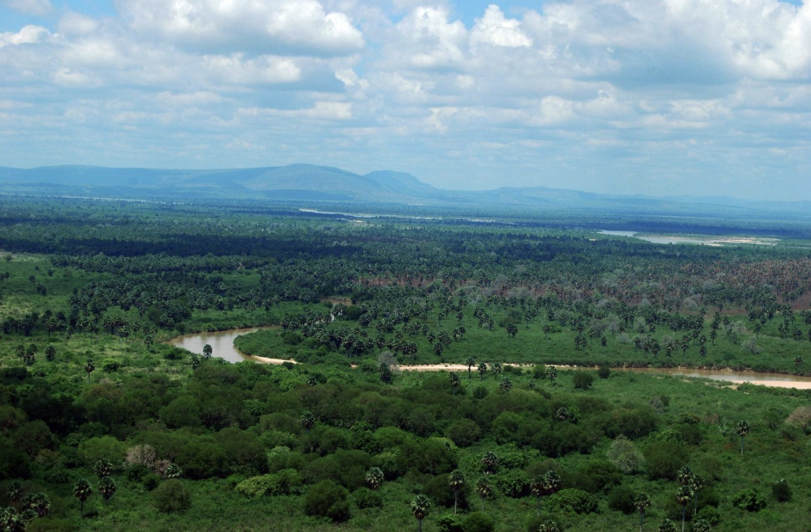
kidepo valley national park
Kidepo Valley National Park is one of Africa’s most spectacular wilderness parks. Located in the remote northeastern corner of Uganda, it borders South Sudan and Kenya. The park covers approximately 1,442 km² and was established in 1962. Location Kidepo Valley National Park is situated in the Karamoja region, about 520 km from Kampala. It can be reached by road or by scheduled charter flights. Main Attractions * Narus Valley – The best area for game viewing, with permanent water that attracts many animals. * Kidepo Valley – Known for its scenic landscapes, dry riverbeds, and Borassus palm trees. * Mount Morungole – A mountain offering challenging hikes and panoramic views. * Ik People – Visitors can experience the unique culture of the indigenous Ik community living on Mount Morungole. Wildlife The park supports an exceptional variety of animals, including: * Lions * Leopards * Cheetahs * African elephants * Cape buffaloes * Rothschild’s giraffes * Zebras * Elands * Greater kudus * Jackson’s hartebeests * Spotted hyenas * Bat-eared foxes Birdlife Kidepo is a paradise for birdwatchers, with more than 470 bird species, including: * Ostrich * Secretary bird * Kori bustard * Karamoja apalis * Abyssinian roller Best Time to Visit * September to March is generally the best time for wildlife viewing, as animals congregate near water sources during the drier months. Popular Activities * Game drives * Bird watching * Nature walks * Cultural visits to the Ik and Karamojong communities * Photography * Scenic viewing Kidepo Valley National Park is renowned for its untouched landscapes, rich biodiversity, and low visitor numbers, making it one of Uganda’s most rewarding destinations for travelers seeking an authentic safari experience.
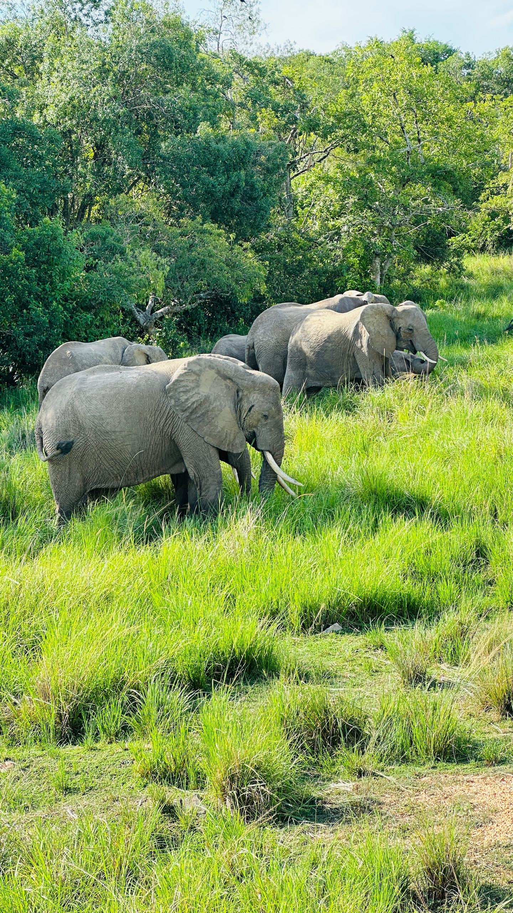
Queen elizabeth national park
Queen Elizabeth National Park is Uganda’s most popular savannah national park. It was established in 1952 and covers approximately 1,978 km². The park is renowned for its incredible biodiversity, scenic landscapes, and abundant wildlife. Location The park is located in western Uganda, about 400 km from Kampala. It spans the districts of Kasese, Rubirizi, Rukungiri, and Kamwenge. Main Attractions * Kazinga Channel – A natural channel connecting Lake George and Lake Edward, famous for boat cruises. * Ishasha Sector – World-renowned for its tree-climbing lions. * Mweya Peninsula – Offers stunning views of the park and is a major tourist hub. * Katwe Crater Lakes – Beautiful volcanic crater lakes with spectacular scenery. Wildlife The park is home to over 95 mammal species, including: * Lions * Leopards * African elephants * Cape buffaloes * Uganda kobs * Hippopotamuses * Nile crocodiles * Warthogs * Hyenas * Giant forest hogs * Chimpanzees (in the nearby Kyambura Gorge) Birdlife Queen Elizabeth National Park is one of Africa’s top birding destinations, with over 600 bird species, including: * Shoebill * African fish eagle * Grey crowned crane * Saddle-billed stork * Pink-backed pelican * African skimmer Best Time to Visit * June to September and December to February are the best months for wildlife viewing due to the drier conditions. Popular Activities * Game drives * Boat cruises on the Kazinga Channel * Chimpanzee tracking in Kyambura Gorge * Bird watching * Nature walks * Lion tracking (on selected research experiences) * Cultural visits to nearby communities Queen Elizabeth National Park is one of Uganda’s finest safari destinations, offering an excellent combination of wildlife, birdlife, scenic crater lakes, and the famous tree-climbing lions of the Ishasha sector
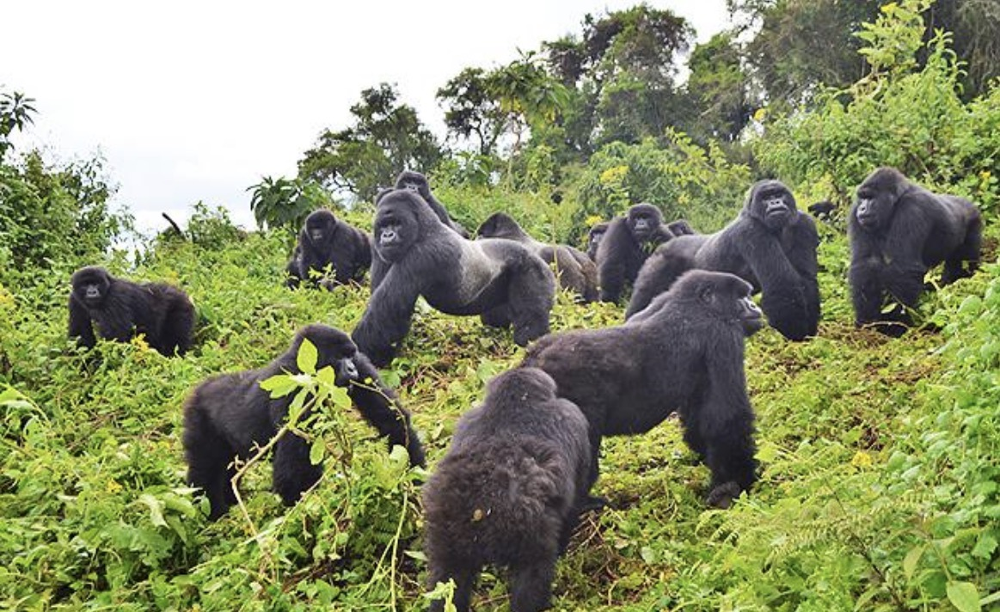
Bwindi impenetrable National park
Bwindi Impenetrable National Park is one of Uganda’s most famous national parks and a UNESCO World Heritage Site. Established in 1991, it covers approximately 331 km² of ancient tropical rainforest in southwestern Uganda. The park is renowned for protecting nearly half of the world’s remaining mountain gorillas. Location Bwindi is located in southwestern Uganda, bordering the Democratic Republic of the Congo. It is about 460 km from Kampala, an 8–10-hour drive, or a short domestic flight to nearby airstrips. Main Attractions * Mountain Gorilla Trekking – The park’s signature activity, allowing visitors to observe habituated gorilla families in their natural habitat. * Ancient Rainforest – One of Africa’s oldest forests, estimated to be over 25,000 years old. * Scenic Hills and Valleys – Spectacular landscapes with mist-covered mountains and lush vegetation. * Waterfalls and Forest Trails – Guided nature walks through diverse habitats. Gorilla Trekking Sectors Bwindi has four main tourism sectors: * Buhoma – The original and most established trekking sector. * Rushaga – Home to the largest number of habituated gorilla families. * Ruhija – Known for excellent birdwatching and scenic views. * Nkuringo – Offers challenging treks with breathtaking mountain scenery. Wildlife Besides mountain gorillas, the park is home to: * Chimpanzees * Black-and-white colobus monkeys * L’Hoest’s monkeys * Blue monkeys * Forest elephants * Giant forest hogs * Duikers Birdlife Bwindi is a world-class birdwatching destination with more than 350 bird species, including: * African green broadbill * African emerald cuckoo * Handsome francolin * Rwenzori turaco Best Time to Visit * June to August and December to February are the best months for gorilla trekking, as trails are generally drier. Popular Activities * Gorilla trekking * Bird watching * Guided nature walks * Community and cultural visits * Batwa cultural experience * Photography Bwindi Impenetrable National Park is one of the world’s premier wildlife destinations, offering unforgettable encounters with mountain gorillas, rich biodiversity, and the unique beauty of Uganda’s ancient rainforest.
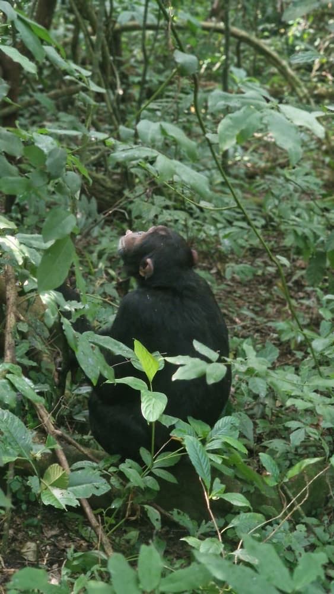
kibale National park
Kibale National Park is one of Africa’s finest tropical rainforests and is widely known as the Primate Capital of the World. Established in 1993, the park covers approximately 795 km² in western Uganda. It is famous for its high concentration of primates, especially chimpanzees. Location Kibale National Park is located in western Uganda, near the town of Fort Portal, about 320 km from Kampala. It borders Queen Elizabeth National Park, forming an important wildlife corridor. Main Attractions * Chimpanzee Tracking – The park offers one of the best chimpanzee tracking experiences in Africa. * Chimpanzee Habituation Experience – Visitors can spend a full day with researchers observing wild chimpanzees. * Bigodi Wetland Sanctuary – A community-managed wetland known for birdlife and primates. * Nature Walks – Guided forest walks through lush tropical rainforest. Wildlife Kibale is home to 13 species of primates, including: * Chimpanzees * Red colobus monkeys * Black-and-white colobus monkeys * L’Hoest’s monkeys * Red-tailed monkeys * Grey-cheeked mangabeys * Olive baboons * Blue monkeys Other wildlife includes: * Forest elephants * Bush pigs * Duikers * Bushbucks Birdlife The park has over 375 bird species, including: * Great blue turaco * African pitta * Green-breasted pitta * Crowned eagle Best Time to Visit * December to February and June to September are the best months for chimpanzee tracking because the forest trails are generally drier. Popular Activities * Chimpanzee tracking * Chimpanzee habituation experience * Bird watching * Guided forest walks * Bigodi Wetland nature walk * Cultural visits * Photography Kibale National Park is a must-visit destination for nature lovers and primate enthusiasts. Its rich biodiversity, dense rainforest, and remarkable chimpanzee encounters make it one of Uganda’s top safari destinations.
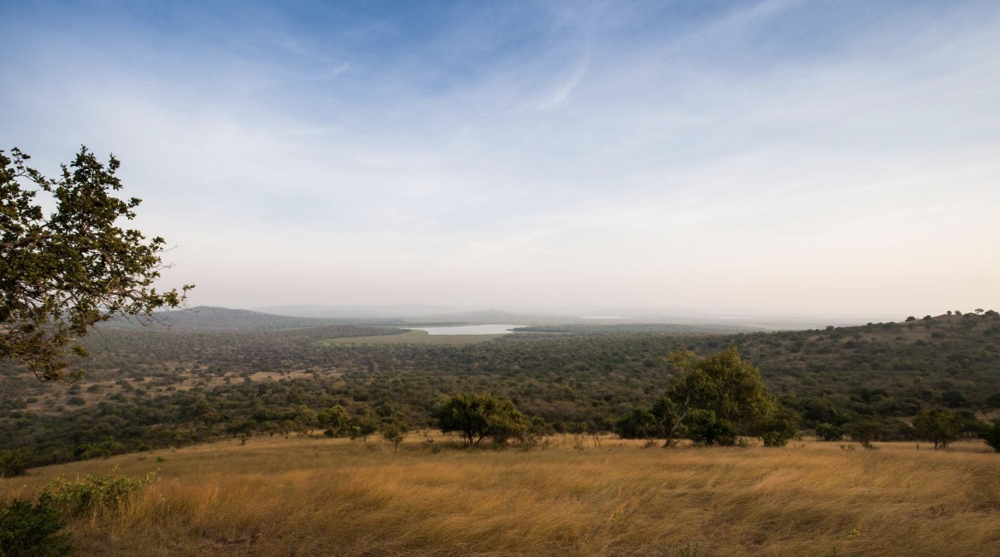
Lake Mburo National park
Lake Mburo National Park is Uganda’s smallest savannah national park, covering approximately 370 km². It was established in 1983 and is well known for its beautiful lakes, rolling hills, acacia woodlands, and abundant wildlife. It is the only national park in Uganda where you can easily see large herds of impalas and one of the few parks with zebras. Location Lake Mburo National Park is located in Kiruhura District in western Uganda, about 240 km (3.5–4 hours by road) from Kampala on the highway to western Uganda. Main Attractions * Lake Mburo – The largest of the 14 lakes within the park, offering scenic boat cruises. * Rolling Hills and Acacia Woodlands – Ideal for photography and nature walks. * Salt Licks – Natural mineral-rich sites where wildlife gathers. Wildlife The park is home to over 68 mammal species, including: * Zebras * Impalas * Rothschild’s giraffes * African buffaloes * Elands * Topis * Waterbucks * Warthogs * Hippos * Leopards * Spotted hyenas Birdlife Lake Mburo National Park has over 350 bird species, including: * African fish eagle * African finfoot * Papyrus gonolek * Saddle-billed stork * Brown-chested lapwing Best Time to Visit * June to August and December to February are the best times for wildlife viewing because the weather is generally dry. Popular Activities * Game drives * Boat cruises on Lake Mburo * Guided walking safaris * Horseback safaris * Cycling safaris * Bird watching * Night game drives * Nature photography Lake Mburo National Park is an excellent destination for visitors seeking a short safari from Kampala. Its unique activities, such as walking and horseback safaris, along with its rich wildlife and scenic landscapes, make it one of Uganda’s most accessible and rewarding national parks.
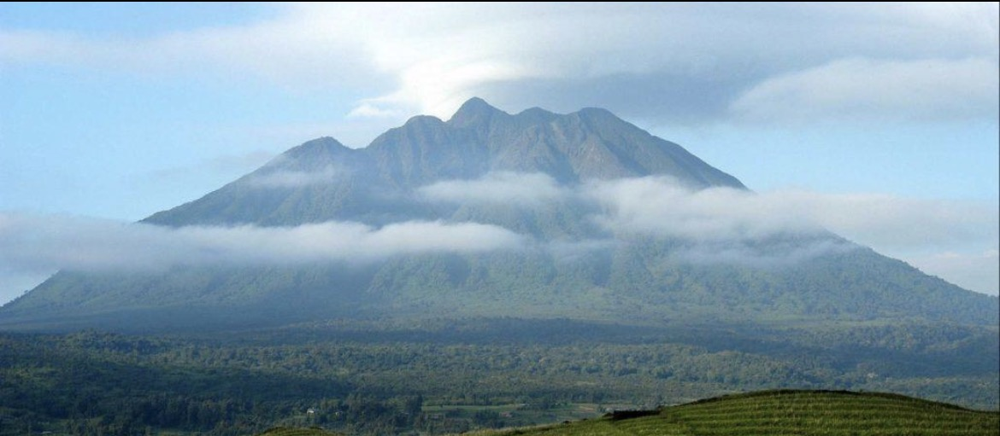
mgahinga gorilla National park
Mgahinga Gorilla National Park is Uganda’s smallest national park, covering approximately 33.7 km². Established in 1991, the park lies in the southwestern corner of Uganda and forms part of the greater Virunga Conservation Area shared with Rwanda and the Democratic Republic of the Congo. Location The park is located in Kisoro District, about 510 km from Kampala. It is situated on the northern slopes of the Virunga Mountains near the borders of Rwanda and the Democratic Republic of the Congo. Main Attractions * Mountain Gorilla Trekking – Visitors can trek the habituated Nyakagezi gorilla family. * Golden Monkey Tracking – One of the few places in the world where you can track endangered golden monkeys. * Virunga Volcanoes – The park includes three extinct volcanoes: * Mount Muhabura (4,127 m) * Mount Gahinga (3,474 m) * Mount Sabyinyo (3,669 m) * Batwa Cultural Trail – Experience the traditions and history of the indigenous Batwa people. Wildlife The park is home to: * Mountain gorillas * Golden monkeys * Forest elephants * Bushbucks * Buffaloes * Giant forest hogs * Bush pigs * Duikers Birdlife Mgahinga is home to over 180 bird species, including: * Rwenzori turaco * Scarlet-tufted sunbird * Dusky crimsonwing * Kivu ground thrush Best Time to Visit * June to August and December to February are the best months for gorilla trekking and hiking because the trails are generally drier. Popular Activities * Gorilla trekking * Golden monkey tracking * Volcano hiking * Bird watching * Batwa cultural experience * Nature walks * Photography Mgahinga Gorilla National Park is a unique destination where visitors can encounter mountain gorillas, track golden monkeys, climb volcanic peaks, and experience the rich culture of the Batwa people, all within a compact but spectacular protected area.
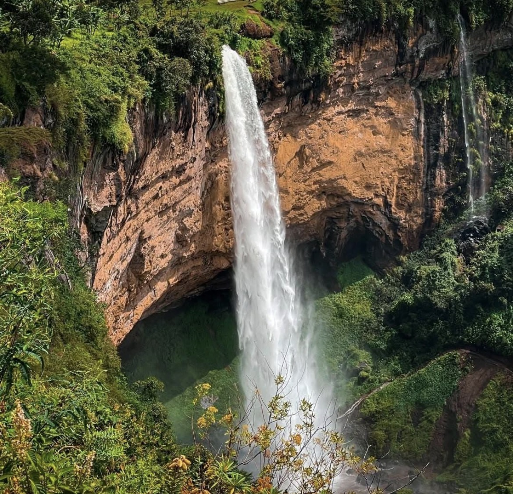
Mount Elgon National park
Mount Elgon National Park is located in eastern Uganda along the border with Kenya. It protects the ancient Mount Elgon volcano, which is one of the largest extinct volcanoes in the world with a massive caldera at its summit. The park covers about 1,145 square kilometers and is known for its cool climate, caves, waterfalls, hot springs, and rich biodiversity.Location: Eastern Uganda (border with Kenya) Size: ~1,145 km² Famous for: Hiking, waterfalls, caves, caldera, nature walks Key Highlights: * Summit area: vast caldera with peaks like Wagagai Peak (4,321 m) * Famous waterfalls: Sipi Falls (near the park) * Caves: ancient caves with salt deposits used by elephants * Wildlife: elephants, buffaloes, monkeys, bushbucks, and over 300 bird species Mount Elgon is ideal for hiking, especially multi-day treks that are less strenuous than Rwenzori, offering scenic views, waterfalls, and peaceful forest trails.
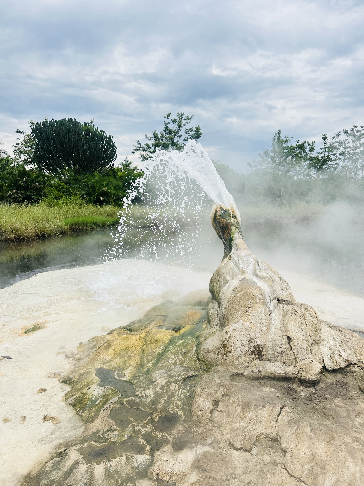
Semuliki National park
Semuliki National Park Semuliki National Park is a remarkable tropical rainforest located in western Uganda, at the foot of the Rwenzori Mountains. The park is renowned for its rich biodiversity, unique Central African flora and fauna, and the famous Sempaya Hot Springs, where visitors can witness boiling geysers surrounded by lush forest. Semuliki is home to forest elephants, buffaloes, chimpanzees, several monkey species, and more than 440 bird species, making it one of Uganda's top birdwatching destinations. Visitors can enjoy guided nature walks, birdwatching, cultural experiences with the local Batwa community, and explore one of East Africa's oldest and most diverse rainforests.
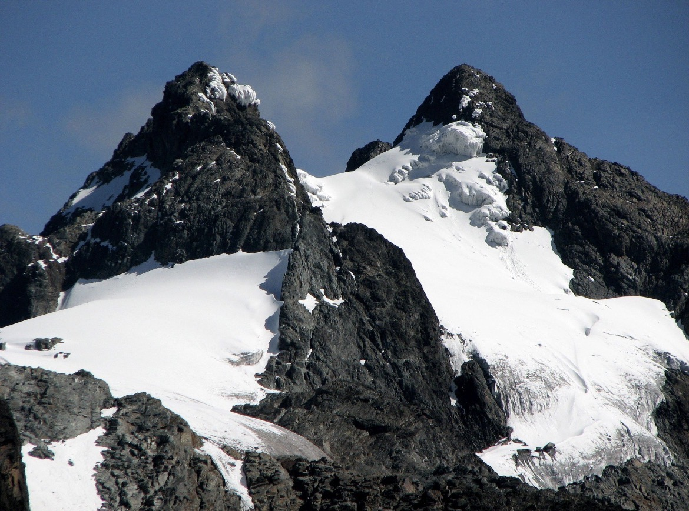
Rwenzori Mountains National Park
Rwenzori Mountains National Park is a UNESCO World Heritage Site located in western Uganda along the border with the Democratic Republic of the Congo. Famous for the majestic Rwenzori Mountains, also known as the "Mountains of the Moon," the park features Africa's third-highest peak, Margherita Peak, rising to 5,109 meters above sea level. Its stunning landscapes include snow-capped peaks, glaciers, alpine meadows, waterfalls, and unique giant lobelias and groundsels. The park is home to diverse wildlife, including forest elephants, chimpanzees, blue monkeys, and over 200 bird species. Visitors can enjoy world-class mountain trekking, hiking, birdwatching, nature walks, and breathtaking scenery, making Rwenzori Mountains National Park one of Uganda's premier destinations for adventure and nature tourism.
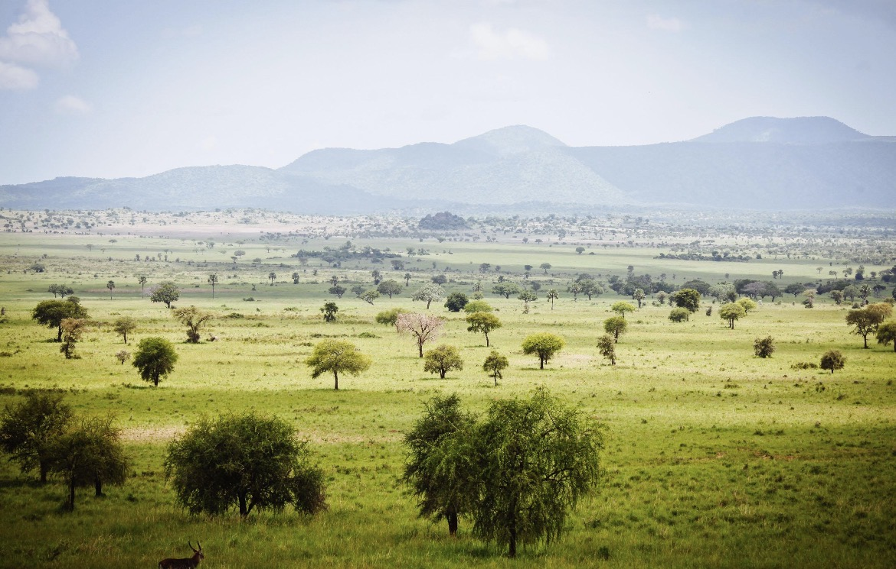
Serengeti National Park is one of Africa’s most famous wildlife destinations, located in northern Tanzania. It covers about 14,750 square kilometers and is best known for the Great Migration, where millions of wildebeest, zebras, and gazelles move across the plains in search of fresh grazing and water. It is one of the best places in the world to see big cats in the wild.Location: Northern Tanzania Size: ~14,750 km² Famous for: Great Wildebeest Migration, big cats, vast savannah plains Key Wildlife: * Lions, leopards, cheetahs * Elephants, giraffes, buffaloes * Wildebeests and zebras (migration herds) * Hyenas, jackals, and many antelope species Main Highlight: The Great Migration The Serengeti hosts the largest terrestrial animal migration on Earth, involving over 1.5 million wildebeests and hundreds of thousands of zebras and gazelles moving in a circular route between Tanzania and Kenya (Masai Mara ecosystem). Serengeti offers classic African safari experiences, including game drives, hot air balloon safaris at sunrise, and dramatic predator-prey interactions across endless golden plains.
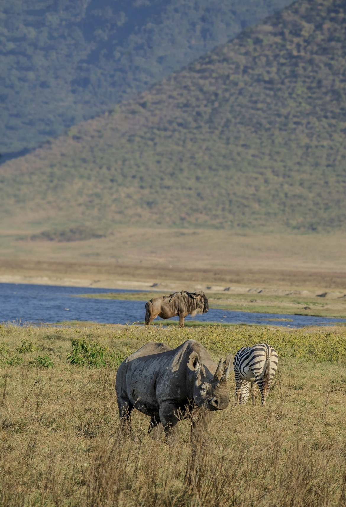
Ngorongoro National park
Ngorongoro Conservation Area The Ngorongoro Conservation Area (NCA) is a UNESCO World Heritage Site and protected ecosystem in northern Tanzania. Encompassing 8,292 km², it is famed for the Ngorongoro Crater—the world’s largest unbroken volcanic caldera—and for sustaining both wildlife and the semi-nomadic Maasai people in a rare coexistence of culture and nature. Key facts * Location: About 180 km west of Arusha in the Crater Highlands * Established: 1959 (as separate from Serengeti National Park) * Area: 8,292 km² * UNESCO status: World Heritage Site (1979) and Global Geopark (2018) * Notable feature: Ngorongoro Crater (19 km diameter, 260 km² floor) Geography and ecology The NCA lies within the Eastern Rift Valley, bridging forests, grasslands, volcanic peaks, and soda lakes. The 600-metre-deep Ngorongoro Crater forms a self-contained wildlife sanctuary home to some 25 000 large mammals—including elephants, lions, buffalo and black rhinos—and over 550 bird species . Nearby craters such as Empakaai and Olmoti add diverse ecosystems of forests, swamps, and highland meadows. Human history and archaeology Within its boundaries lies Olduvai Gorge, where Louis Leakey and Mary Leakey unearthed fossils of early hominins such as Homo habilis and Australopithecus boisei, dating back over two million years . These discoveries earned the area its nickname “the Cradle of Humankind.” The Maasai people have lived here for centuries, and the region’s multi-use policy allows limited pastoral activity alongside wildlife protection. Wildlife and the Great Migration The Ngorongoro ecosystem connects directly to the southern Serengeti. Between December and March, the Ndutu Plains within the NCA host the calving season of the Great Wildebeest Migration—one of the planet’s largest animal events . The area’s permanent water sources and fertile grasslands sustain wildlife year-round, including predators such as lions, cheetahs, and hyenas. Visitor experiences Visitors can enjoy game drives in the crater, walking safaris around Empakaai or Olmoti, bird-watching at Lake Magadi, and archaeological tours of Olduvai Gorge. Cultural tours to Maasai bomas offer insight into traditional life . Accommodation ranges from luxury lodges on the crater rim to budget campsites across the highlands. The area is accessible by road from Arusha (≈4 hours) or via Lake Manyara airstrip. Climate and best time to visit At altitudes above 2,000 m, Ngorongoro has a mild tropical highland climate. The dry season (June–October) offers the clearest game viewing and pleasant days around 25 °C, while the wet months (November–May) bring lush landscapes and excellent birdlife
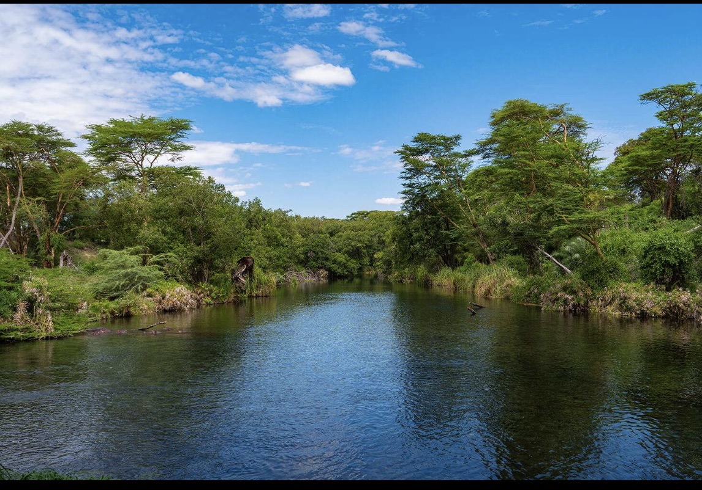
Tarangire National park
Tarangire National Park Tarangire National Park is a protected wildlife area in northern Tanzania, known for its dense elephant population and iconic baobab-dotted savannah. It forms part of Tanzania’s northern safari circuit and is especially valued for its seasonal migration patterns and relatively low visitor numbers compared with larger parks. Key facts * Location: Manyara Region, northern Tanzania * Area: About 2,850 square kilometres * Established: 1970 * Notable feature: Tarangire River – dry-season wildlife lifeline * Best visiting period: June to October (dry season) The park’s name derives from the Tarangire River, which runs through its centre and supports wildlife during the long dry season. Its terrain mixes rolling hills, grassland plains, swamps, and scattered acacia and baobab trees. This varied habitat supports high biodiversity, attracting herbivores and predators alike. Wildlife and conservation Tarangire is famed for hosting one of East Africa’s largest elephant herds, often numbering in the thousands. It also shelters giraffes, wildebeests, buffaloes, zebras, lions, leopards, and more than 400 bird species, including endemic and migratory types. Seasonal movements of animals from surrounding areas make it a key conservation corridor. Visitor experience The park is less crowded than neighbouring Serengeti National Park and Ngorongoro Crater, offering an intimate safari atmosphere. Visitors typically explore by vehicle or guided walking safaris. Panoramic viewpoints and riverside campsites provide opportunities to observe wildlife concentrations near the Tarangire River. Importance and management Tarangire contributes significantly to Tanzania’s tourism economy and ecological research. Managed by the Tanzania National Parks Authority, it forms part of a broader network of protected ecosystems critical to maintaining northern Tanzania’s wildlife migrations and biodiversity resilience.
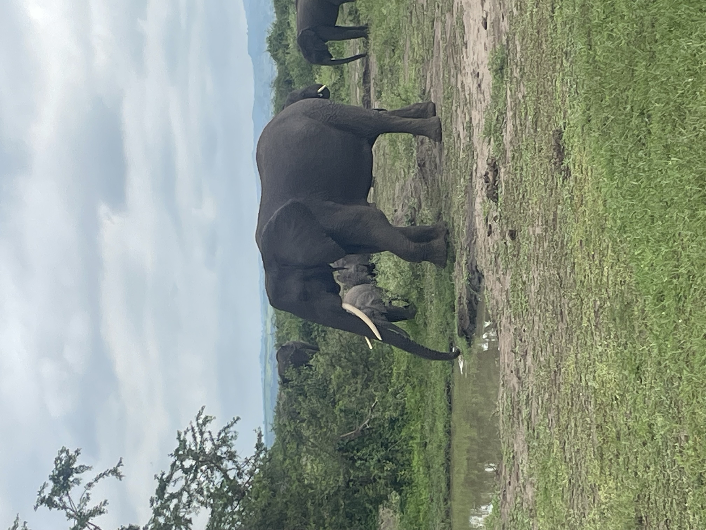
Nyerere National park
Nyerere National Park Nyerere National Park is a vast protected area in southern Tanzania and one of Africa’s largest national parks. Established in 2019, it was created from the northern section of the former Selous Game Reserve and named in honour of Julius Nyerere. The park is notable for its rich biodiversity, dramatic landscapes, and relatively low tourist density. Key facts * Location: Southeastern Tanzania, near the town of Morogoro * Area: About 30,893 km² * Established: 2019 * Named after: Julius Nyerere, Tanzania’s founding president * Major river: Rufiji River Geography and ecosystems Nyerere National Park encompasses miombo woodland, open grassland, and riverine forest, intersected by the Rufiji River and its network of lakes and channels. Seasonal flooding creates diverse habitats supporting large populations of elephants, lions, hippos, and crocodiles. The park’s unspoiled wetlands make it a key refuge for many endangered species. Wildlife and conservation The park harbours one of the largest elephant populations in East Africa and significant numbers of African wild dogs, buffaloes, leopards, and antelopes. It is also a major birding destination, with over 440 recorded species. As part of the former Selous, it is a UNESCO World Heritage site recognised for outstanding ecological value, though poaching and climate pressures remain conservation challenges.Nyerere National Park offers game drives, walking safaris, and boat safaris along the Rufiji River, providing close encounters with wildlife and scenic landscapes. Access is typically by air from Dar es Salaam or by road via Kibiti or Morogoro. Compared with parks in northern Tanzania, it provides a more remote and less crowded safari experience. Significance The park plays a crucial role in protecting southern Tanzania’s ecosystems and contributes to national conservation and tourism goals. Its creation aligns with efforts to diversify Tanzania’s safari circuit beyond the Serengeti National Park and Ngorongoro Conservation Area, promoting sustainable wildlife tourism and regional development.
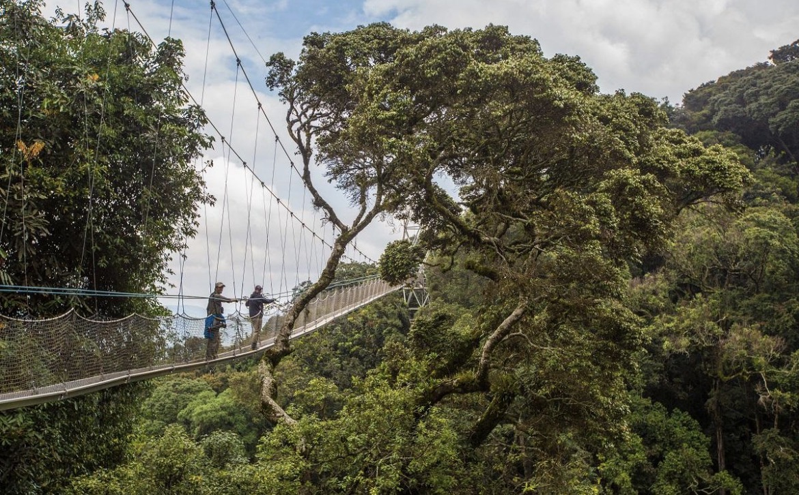
Volcanoes National Park
Location: Northwestern Rwanda (Virunga Mountains) Famous for: Mountain gorillas and golden monkeys Details: Volcanoes National Park is Rwanda’s most famous park and one of the best gorilla trekking destinations in the world. It protects part of the Virunga volcanic chain and is home to several habituated mountain gorilla families. Key experiences: * Gorilla trekking (main attraction) * Golden monkey tracking * Hiking volcanoes like Mount Bisoke and Mount Karisimbi * Visit to Dian Fossey research area Wildlife: Mountain gorillas, golden monkeys, forest elephants, buffaloes, bushbucks, and many bird species.
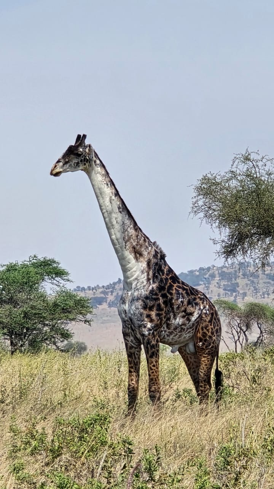
Nyungwe Forest National park
Nyungwe Forest National Park Location: Southwestern Rwanda Famous for: Chimpanzees, rainforest, canopy walk Details: Nyungwe is one of Africa’s oldest rainforests and a biodiversity hotspot. It is especially known for chimpanzee trekking and the famous canopy walkway above the forest. Key experiences: * Chimpanzee trekking * Colobus monkey tracking * Canopy walkway adventure * Birdwatching (over 300 species) Wildlife: Chimpanzees, colobus monkeys, L’Hoest’s monkeys, forest birds, butterflies.
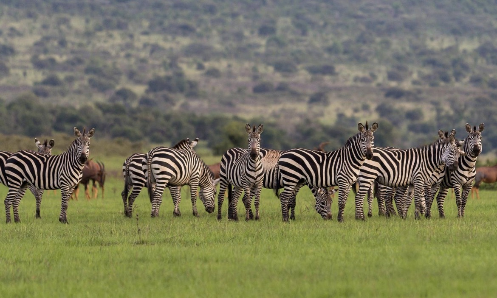
Akagera National park
Akagera National Park Location: Eastern Rwanda (border with Tanzania) Famous for: Big Five safari park Details: Akagera is Rwanda’s only savannah national park and offers classic African safari experiences. It has been successfully restored and now supports the Big Five again. Key experiences: * Game drives (Big Five viewing) * Boat safaris on Lake Ihema * Birdwatching * Sunset safaris Wildlife: Lions, elephants, rhinos, leopards, buffaloes, hippos, crocodiles, giraffes, zebras.
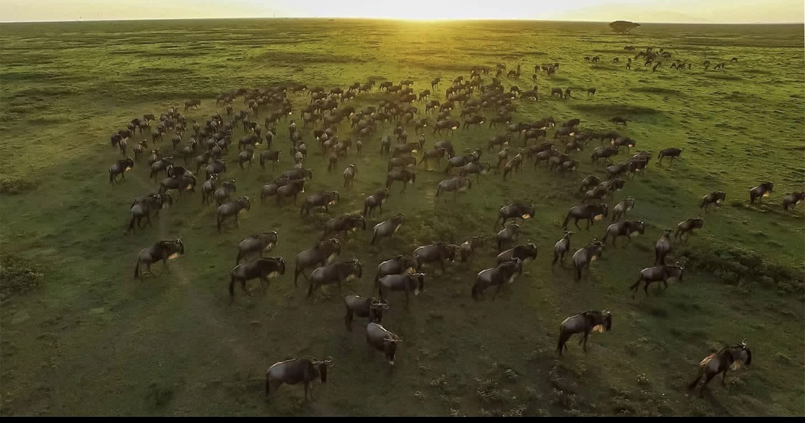
Masai Mara National park
The Maasai Mara National Reserve is one of Kenya’s most famous safari destinations, located in southwestern Kenya along the border with Tanzania and connected to the Serengeti ecosystem. It is world-renowned for its rich wildlife population and the dramatic Great Migration river crossings at the Mara River.Location: Narok County, southwestern Kenya Connected ecosystem: Serengeti–Maasai Mara ecosystem Famous for: Great Migration, big cats, classic savannah safaris Key Wildlife: * Lions, leopards, cheetahs (one of Africa’s highest predator densities) * Wildebeests and zebras (seasonal migration) * Elephants, giraffes, buffaloes, hippos * Hyenas, jackals, antelopes Main Highlight: The Great Migration Every year, over a million wildebeests and hundreds of thousands of zebras move between the Serengeti and Maasai Mara in search of fresh grazing. The most dramatic scenes happen when herds cross the crocodile-filled Mara River. Cultural Connection: The reserve is named after the Maasai people, who live in surrounding areas and maintain a strong cultural presence alongside wildlife conservation. Maasai Mara is considered one of the best safari destinations in the world for close-up wildlife viewing and photography.
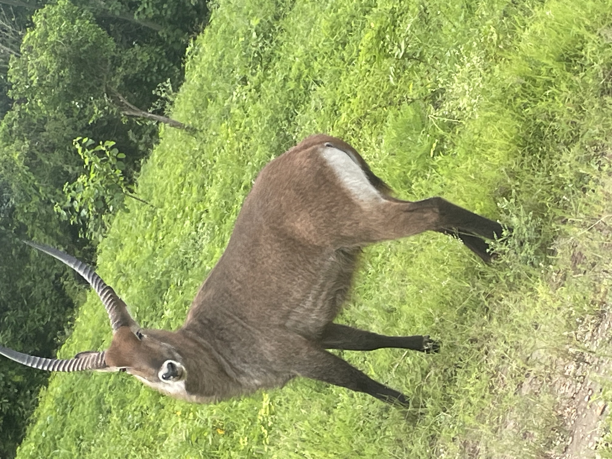
Amboseli National park
Amboseli National Park Amboseli National Park is a premier wildlife reserve in southern Kenya’s Kajiado County, famed for its vast elephant herds and striking views of Mount Kilimanjaro. Covering 392 km², it forms the heart of a UNESCO Biosphere Reserve and stands among Africa’s most photographed safari landscapes. Key facts * Location: Kajiado County, Kenya, near the Tanzania border * Area: 392 km² * Established: 1974 (upgraded from 1968 reserve) * Managing authority: Kenya Wildlife Service * Main attraction: Large elephant herds, Kilimanjaro vistas, Maasai culture Landscape and ecosystem Amboseli’s environment spans open savannah, acacia woodland, swamps, and the seasonal bed of Lake Amboseli. Underground streams fed by Kilimanjaro’s glacier melt create permanent wetlands such as Enkongo Narok and Longinye Swamps—vital refuges for elephants, hippos, and waterbirds during the long dry months. The park’s Maasai name, Empusel (“salty dust”), reflects its arid plains and mirage-like horizons. Wildlife and research Home to over 50 mammal species and more than 400 bird species, Amboseli supports lions, cheetahs, buffalo, giraffes, zebras, and prolific birdlife including flamingos and crowned cranes. Its elephants are among the best studied in Africa through the Amboseli Elephant Research Project, founded in 1972 and still central to global elephant science and conservation. Landmarks and viewpoints Observation Hill, a volcanic rise above Enkongo Narok Swamp, offers panoramic views of the entire park and Kilimanjaro—one of the few spots visitors may explore on foot. The park’s signature image remains elephants crossing dusty plains beneath the mountain’s snow-capped peak, often captured near Ol Tukai and Serena Lodges. Access and visitor experience Amboseli lies about 230 km southeast of Nairobi, reachable by road in 4–5 hours via the Emali–Kimana route or by air through the Amboseli Airstrip. Activities include game drives, guided walks in surrounding conservancies, balloon safaris, and Maasai cultural visits. Well-developed Kenya Wildlife Service facilities, picnic sites, and lodges such as Ol Tukai Lodge and Amboseli Serena Safari Lodge make it accessible to a wide range of travellers. Conservation and community The park anchors the greater Amboseli ecosystem of over 8,000 km², where community conservancies like Kimana and Elerai maintain wildlife corridors. Joint initiatives by KWS, local Maasai, and NGOs such as the Big Life Foundation support anti-poaching, habitat management, and sustainable tourism—ensuring Amboseli remains one of Kenya’s most celebrated natural treasures.
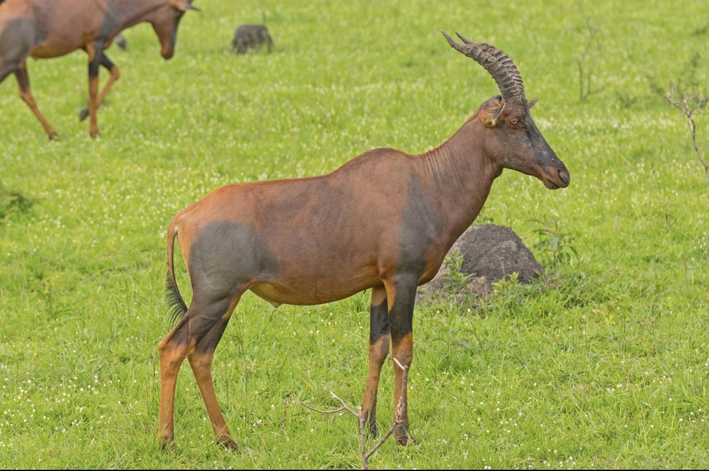
Tsavo National park
Tsavo East National Park Tsavo West National Park One of the largest park systems in the world, known for red elephants, lions, lava landscapes, and rugged wilderness. Key facts * Location: Taita-Taveta County, south-eastern Kenya * Established: 1948 * Area: Approximately 13,747 km² * Notable features: Galana River, Lugard Falls, Yatta Plateau * Best visiting season: June–October (dry season) Geography and landscape Tsavo East occupies semi-arid plains crossed by the Galana River and framed by the Yatta Plateau, one of the world’s longest lava flows. The park’s open savannahs, thornbush, and seasonal wetlands support both wildlife and striking geological features such as Mudanda Rock and Aruba Dam, offering panoramic viewpoints and year-round water sources. Wildlife and ecology Home to the famed “red elephants” coated in iron-rich soil, the park also shelters lions, leopards, cheetahs, zebras, giraffes, buffalo, and over 500 bird species. The park’s habitats transition from open grassland to riverine forest, providing critical migratory corridors within Kenya’s broader Tsavo ecosystem that links with Tsavo West and neighbouring ranch conservancies. Conservation and tourism Managed by the Kenya Wildlife Service, Tsavo East is a cornerstone of national conservation strategy and tourism revenue. Efforts focus on anti-poaching, habitat restoration, and coexistence with nearby communities. The park is accessible via the Nairobi–Mombasa highway and several airstrips, attracting both safari lodges and mobile camps for wildlife viewing and photographic safaris. Cultural and historical significance The area holds archaeological sites and stories from the early 20th century, including the construction of the Kenya–Uganda Railway near the man-eaters of Tsavo episode. Today, it stands as a symbol of Kenya’s enduring wildlife heritage and natural beauty.
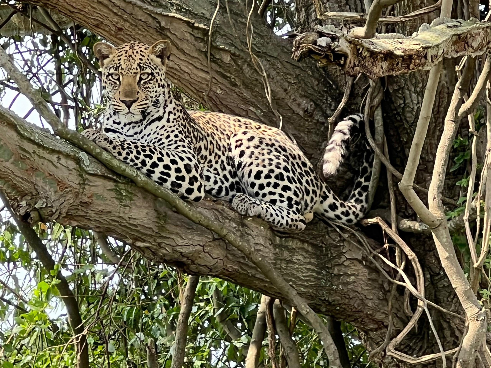
Nairobi National park
Nairobi National Park Nairobi National Park is a wildlife reserve located just south of Kenya’s capital, Nairobi. Established in 1946, it is the country’s first national park and one of the few in the world bordering a major city. The park is notable for its remarkable juxtaposition of wild savannah landscapes against Nairobi’s urban skyline. Key facts * Location: Nairobi, Kenya * Established: 1946 * Area: 117 square kilometres * Managed by: Kenya Wildlife Service * Main attractions: Lions, rhinos, giraffes, and diverse birdlife Geography and environment The park’s terrain includes open grass plains, acacia-dotted bush, and the Athi River boundary to the south, with the city’s skyscrapers visible to the north. It lies at an altitude of roughly 1,500–1,800 metres and is fenced on the city side but open to the south, allowing wildlife migration into the broader Athi-Kapiti Plains ecosystem. Wildlife Nairobi National Park hosts over 100 mammal species, including lions, leopards, cheetahs, and a thriving population of endangered black rhinos. It is also a birding hotspot, with more than 400 recorded species, both resident and migratory. Seasonal rains influence the availability of grazing and animal movement patterns. Conservation and significance The park plays a crucial role in Kenya’s conservation strategy as a sanctuary for endangered species and a living classroom for environmental education. Its proximity to urban Nairobi underscores both the pressures of encroaching development and the success of balancing city growth with wildlife preservation.
Customer Reviews
Safari Booking
Uganda Game Parks & Lakes Map
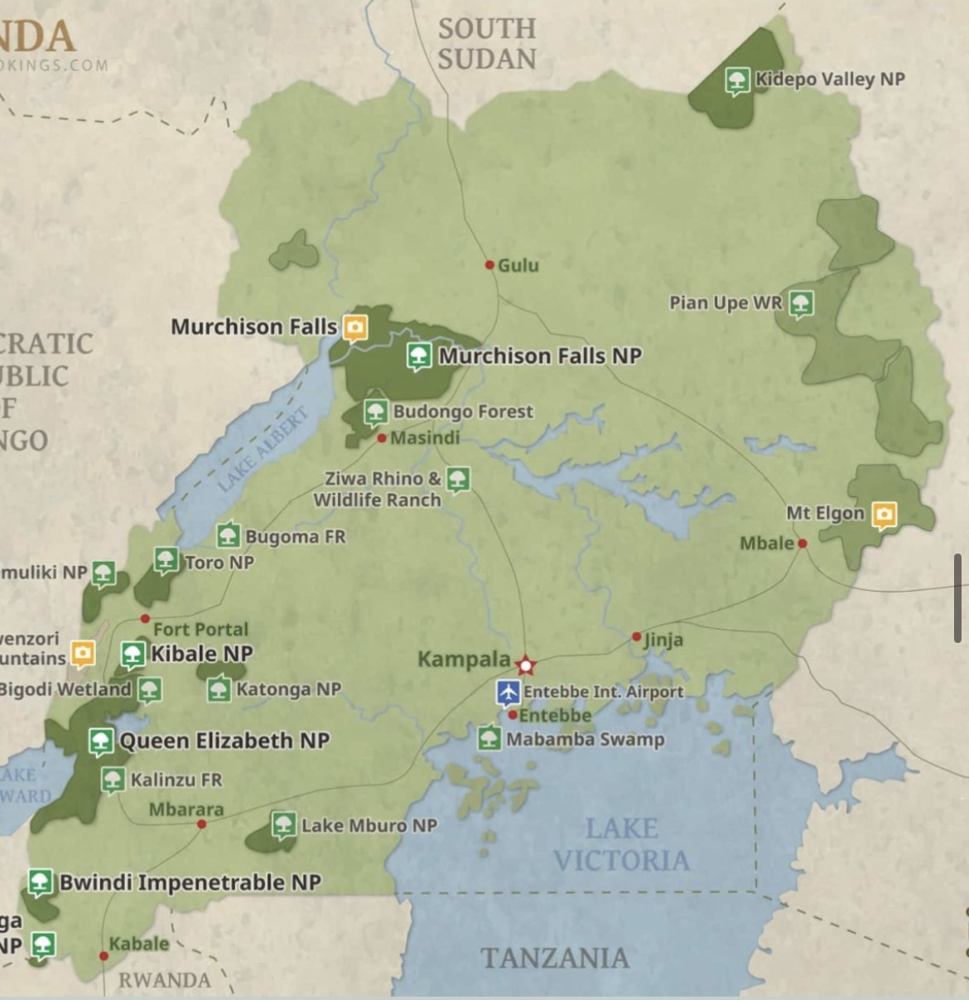
© 2026 brendavatoursandtravel